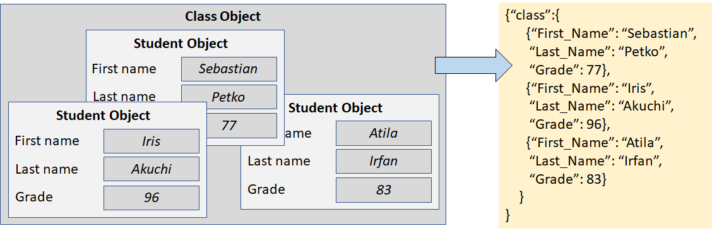
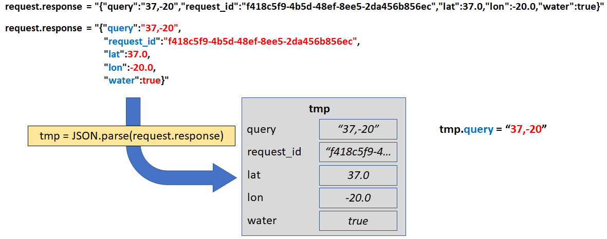

In programming, software can be written to allow other software to work with it. When any two software programs join, it is called an interface. The software being used is referred to as a service; the software using the service is called an application. If Alicia writes a useful service, Juaquin can use that service as part of his application. Alicia wants to have her service used, but she doesn't want to have many people, like Juaquin, asking her to work with them. Instead, Alicia needs to communicate to any future developer how to program his own application to interface with her service. Thus an API is an application programming interface and it tells people like Juaquin how to work with some service.
The API is based on calls from the application to the service. The application says, "Excuse me service. Do you have an
A?" The service receives the call, finds the A and replies. "Sure, application. I have an A." APIs define the language of these
exchanges. It reads something like a form with blanks that need to be filled in.
My name is Steve and I would like to have a/an Cherry Pepsi .
Dear Steve I do / don't have a/an Cherry Pepsi .
REST is a particular type of API. It has information that will be transferred from the application to the service. That information is represented in a series of specific state-value pairs. For example, a RESTful API requesting weather from last week would want the state date to be for last week. This is important because no service wants to remember the state from many applications that may be accessing the service. It is up to the application to use the RESTful API to REpresent the State and Transfer it to the service. RESTful APIs use these four calls:
JSON is a way to package information for it to be sent over the internet. The JavaScript language is used in almost every web-based application. Within JavaScript, groups of data are bundled together in objects. Objects can also be bundled together into other objects like babushka dolls (sometimes called nested Russian dolls). One example might be data about a student. Each student has a first name, last name, and a class grade. Then all the students can be bundled together into a description of the class. All of this information is reduced to a few leters and numbers, packaged into quotes, commas, and curly braces. This is the dense, compacted, form of data. This is the tightly bound chromosome, not the loosely flowing DNA strand. It can still be read by humans, but it lacks all the verbs, articles, adjectives, adverbs, etc. With some practice you can read this, but who wants to. This is meant to be used to communicate between computers.
Some services provide public APIs to anyone who wants to use them. These API calls do not require any kind of authority, license, or payment. The call can be made by anyone and often written right into the URL line of your browser. One of these APIs somes from https://official-joke-api.appspot.com/. When your browser goes to this site the API randomly selects a joke and returns the answer in a JSON message. This isn't particularly readable to a human, but the same response could be rolled into a simple HTML page to show the result in a more readable way. This button below calls the random joke API. You can see a live update!
Whant to hear a Joke?

Some services provide paid APIs, track the number of API calls you make, and may want to prevent any random person from using the service. The best way to manage this is by supplying users with the authority to access the API and blocking everyone else. The service provider can generate a key that will be used in the API call and will identify the authorized user. If there is a fee for the use of the service, the service provider will record the use and charge accordingly. Some APIs will track the number of uses and limit them per month, per day, or even per minute. Remember that while a human might have trouble calling the same API more than 20 times per minute (just 3 seconds each) a computer can do the same thing millions of times. Limiting the API calls in this way prevents someone from programming an application to severely abuse the API.
Authorized user keys are long, random-looking strings of characters. wqenvqor423fg3lk321lkjsdf04fs3 is a pretty good example. The service provider can randomly select 30 characters and check to see if its already in use. If the key is already used, they just try to create a new key. Finding an already-in-use key is rare. If you think about it, that key has 30 characters and there are 36 choices (26 letters + 10 digits) for each character. That means that there are about 49,000,000,000,000,000,000,000,000,000,000,000,000,000,000,000. That is enough different combinations to give 3700 trillion addresses to each atom of the Earth. Believe me when I say it is rare. The same rarity also makes it hard to guess a valid key so the service provider is safe from random people trying to use the API.
Each API should have documentation that explains how to use it. Some APIs do a better job with documentation. Some do not. Generally, you are looking for three things:
The code below was used in an authorized API call. To see a similar call in action, you can right click on this page and select View Source. The code below creates a very simple HTML page that calls the onwater.io API, a service the determines if a specific position on the earth is actually on the ocean 😄. On line 5 you can see this is a GET call. On line 6 access_token indicates that this call is authoritative. Lines 7 through 13 setup a callback function. When the API returns a result, that code will run. On line 14 the request is finally sent.
1 <html>
2 <head>
3 <script>
4 var request = new XMLHttpRequest();
5 request.open("GET",
6 "https://api.onwater.io/api/v1/results/37,-20?access_token=abcdefghijkl");
7 request.onload = () => {
8 var tmp = JSON.parse(request.response);
9 var s = "Lat: " + tmp.lat + "<br>";
10 s += "Lon: " + tmp.lon + "<br>";
11 s += "Is on water: " + tmp.water;
12 output.innerHTML=s;
13 }
14 request.send();
15 </script>
16 </head>
17 <body>
18 <p id="output"></p>
19 </body>
20 </html>
The callback function uses the JSON.parse function on line 8 to read the incoming response. As discussed above, JSON was originally based on JavaScript objects. The JSON.parse function turns the human-readable text back into an object On lines 9 through 11, the tmp object is used to get the latitude, longitude, and water/land status. If you don't exactly understand the code on these lines, you could simply write output.innerHTML = request.response on line 12 and remove lines 8 through 11. That will print the raw JSON object just as shown in the picture below.
There are anumber of APIs that may lend themselves to useful school assignments. A large list can be found at GitHub. WARNING: Some of these APIs access jokes and other material that is not appropriate for children. Treat any API as you would a book or YouTube™ video being assigned to your students for an assigment. Caution is recommended. The examples below, however, have been checked and should be free from any concern.